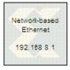

|
|
The Xilinx Network-based Ethernet Co-Simulation block provides an interface to perform hardware co-simulation through an Ethernet connection over the IPv4 network infrastructure.Refer to Network-Based Ethernet Hardware Co-Simulation for further details about the interface, its prerequisites and setup procedures.The port interface of the co-simulation block varies. When a model is implemented for network-based Ethernet hardware co-simulation, a new library is created that contains a custom network-based Ethernet co-simulation block with ports that match the gateway names (or port names if the subsystem is not the top level) from the original model. The co-simulation block interacts with the FPGA hardware platform during a Simulink simulation. Simulation data that is written to the input ports of the block are passed to the hardware by the block. Conversely, when data is read from the co-simulation block's output ports, the block reads the appropriate values from the hardware and drives them on the output ports so they can be interpreted in Simulink. In addition, the block automatically opens, configures, steps, and closes the platform.